50%
Reduction in time to identify impacted services
40%
Faster dependency tracing
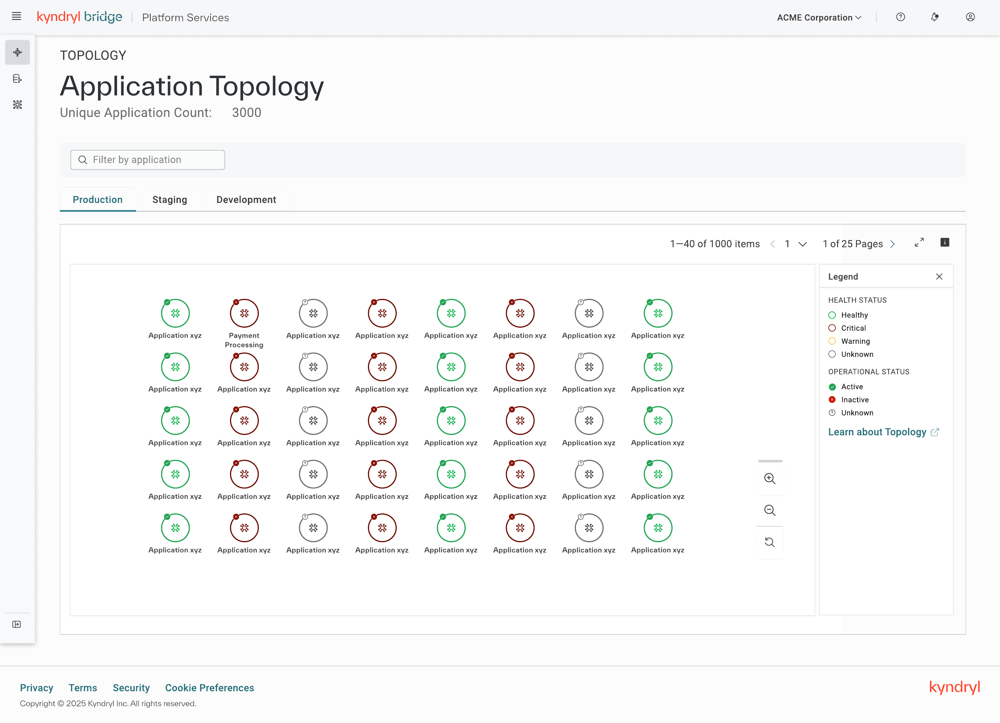
Enterprise UX · AIOps · 2024
Senior Lead UX Designer — end-to-end experience design
2024
Product managers, architects, engineering teams, and operational stakeholders
Figma · User Research · Information Architecture · Data Visualisation
01A convergence challenge
Kyndryl was converging multiple topology experiences across Application Foundation and AIOps into a single platform. Existing topology data existed across several services, resulting in fragmented views, inconsistent relationships, and duplicated user journeys. This was not simply a visualisation redesign — the project required aligning multiple stakeholders, data models, and user personas around a single coherent experience.
Outcome
Designed a unified topology experience that brought together application, infrastructure, service, and dependency data previously spread across multiple systems.
The redesign improved both performance and perception: users identified impacted services 50% faster, traced dependencies 40% faster and achieved a 90% task-completion rate. Satisfaction increased from 3.1 to 4.5/5, while SUS improved from 62 to 79.7, moving the experience from below average to good, above-average usability.
Reduction in time to identify impacted services
Faster dependency tracing
Task completion rate for impact analysis workflows
Increase in successful dependency discovery
SUS score improvement
UX satisfaction score (out of 5)
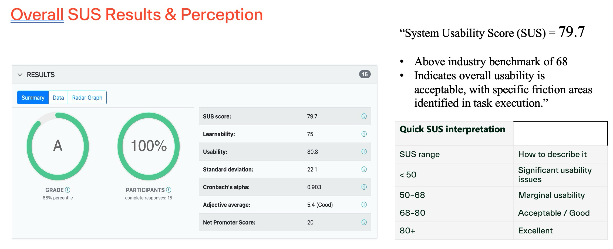
02Convergence Challenge
At Kyndryl, I lead the design of enterprise platforms supporting infrastructure operations, inventory governance, incident management, and AI-driven operational intelligence. My work focuses on simplifying highly complex workflows, improving discoverability of critical information, and enabling faster decision-making through thoughtful user experiences. The topology experience was among the most complex challenges: representing the relationships between thousands of infrastructure components in a way that is navigable, actionable, and usable under the pressure of a live incident.
“How might we help IT operations teams understand infrastructure dependencies, isolate impacted components, and navigate large-scale topologies efficiently — without being overwhelmed by visual complexity during active incident investigation?”
03Design Principles
All topology data unified into one consistent model. Users trust what they see — no cross-referencing required.
Complexity revealed on demand at each level of investigation. The top-level view is scannable; depth is earned through interaction.
Users never lose their position during drill-down or lateral navigation. The canvas state persists across every interaction.
Every design decision validated against enterprise topology sizes — 5,000+ nodes, hybrid environments, multi-cloud. If it does not scale, it does not ship.
Hierarchy, search, filter, and affinity views serve different investigation paths and mental models — no single path is forced.
04Research
Methods used:
Research objectives:
05Exploration
A tree diagram that expresses the parent-child hierarchy of infrastructure components — Application at the root, Resources at the leaves. Clear structural orientation and familiar to architects who think in org-chart terms.
Trade-off: Breaks down at enterprise scale — trees cannot represent cross-cutting relationships (shared databases, shared network segments). Rigid structure conflicts with real infrastructure variability. Discarded.
A relationship-first canvas where any entity can connect to any other — familiar from existing tools and excellent for representing lateral dependencies between services.
Trade-off: Does not scale beyond 50–100 nodes without visual noise dominating the canvas. Lacks structural orientation — users with no prior context have no starting point. This was the existing design's approach and the source of most user frustration.
A hybrid model: structured hierarchy for orientation, relationship visibility surfaced on demand. Each level of the hierarchy answers a specific user question; lateral relationships (affinities, shared resources) are accessible from any node without leaving the canvas.
Trade-off: Selected. Combines the structural clarity of a hierarchy with the relational flexibility of a graph — and scales to enterprise complexity by deferring depth until the user requests it.
06Iterations
Iteration 1 — Information architecture and progressive disclosure
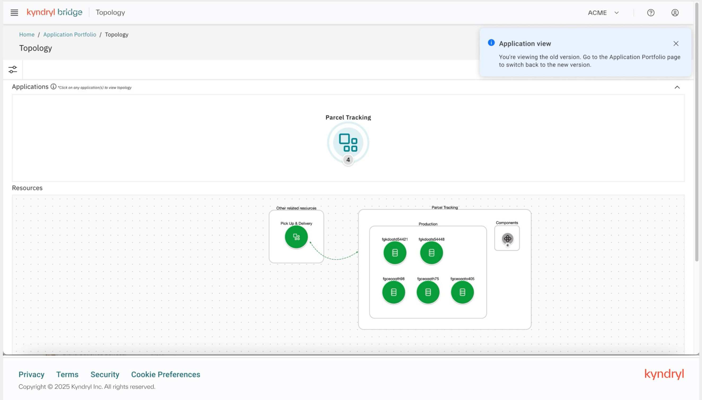
The original design showed a single application at a time inside a flat resource canvas with no health status, no filtering, and no way to understand the state of the system at a glance. I started by mapping the full information architecture — what entities existed, how they are related, and what decisions users needed to make — then designed a progressive disclosure system that put the right information at the right level. The top-level view shows all applications with health and operational status at a glance; drilling in reveals connections, dependencies, and attributes without leaving the canvas.
Iteration 2 — Interaction design for app-to-app connections
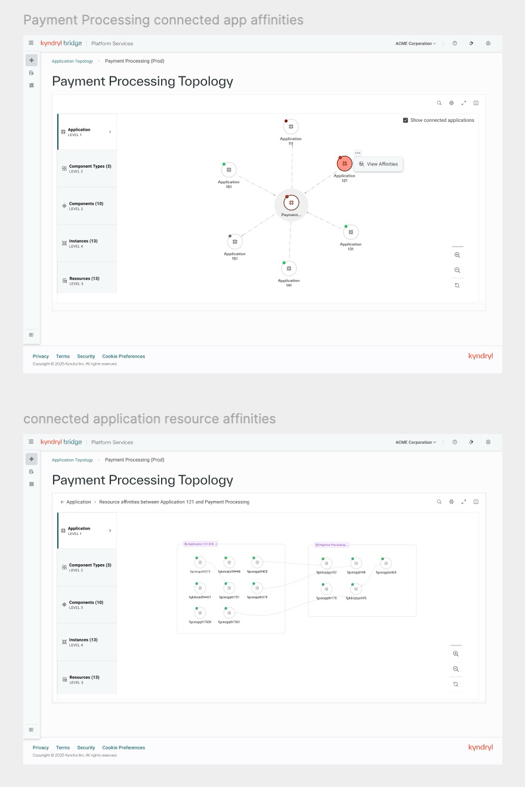
A key user need surfaced in research was understanding how applications connect to each other — not just their internal structure, but their shared dependencies and resource affinities with other applications. I designed a two-step interaction pattern: from the topology canvas, selecting a node and triggering "View Affinities" reveals all connected applications in a radial node-link view. Drilling into any connection opens a focused affinity detail view that surfaces the shared components and resources between the two applications side by side — allowing users to immediately understand blast radius and dependency overlap without leaving the topology context.
Iteration 3 — Mapping the topology hierarchy
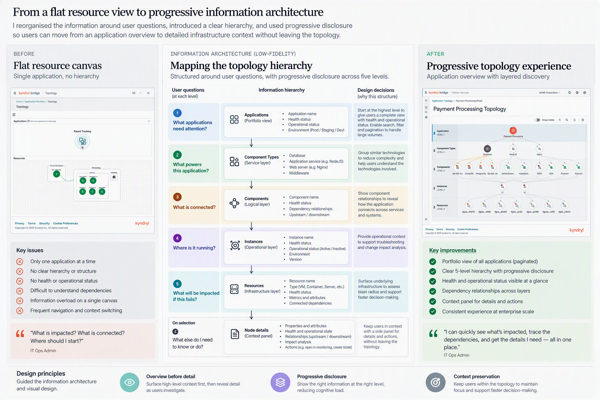
I reorganised the information around the questions users were actually asking at each level of investigation — not around the technical structure of the data. This produced a clear 5-level hierarchy: Applications (portfolio view) → Component Types (service layer) → Components (logical layer) → Instances (operational layer) → Resources (infrastructure layer) — with a context panel surfacing on node selection. Each level was structured around a user question: What applications need attention? What powers this application? What is connected? Where is it running? What will be impacted if this fails? Design principles — overview before detail, progressive disclosure, and context preservation — guided every decision.
07Design Decisions
The original experience rendered the full topology graph on load — thousands of nodes simultaneously, technically complete but practically unusable. Stakeholders pushed back on progressive disclosure from multiple directions: engineering flagged rendering complexity, product worried about “hiding” information, and business stakeholders expected one view to serve Application, Infrastructure, Service Map, and Hierarchical use cases all at once. The position that held: one topology cannot serve 100+ use cases. A user scoped to four database components with clear health status has more actionable information than a user staring at 1,000 undifferentiated nodes.
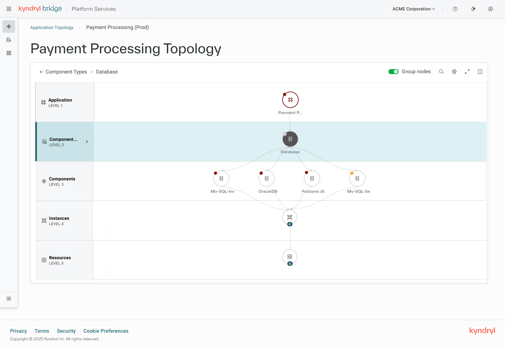
Users reported the canvas felt “navigable” for the first time in testing. Time to locate a target component dropped significantly compared to baseline sessions on the previous interface.
Every time users needed performance metrics, they navigated to a separate service — Infrastructure Inventory — losing canvas state entirely and having to reconstruct their position on return. The slide-in context panel eliminated this by surfacing metrics, health state, and component details without leaving the topology. A secondary challenge was data ownership ambiguity across systems; the response was explicit provenance labelling so users could assess source and freshness in context. Engineering scoped this as phase 2 — I held it as phase 1, because removing it would have shipped the core problem unsolved.
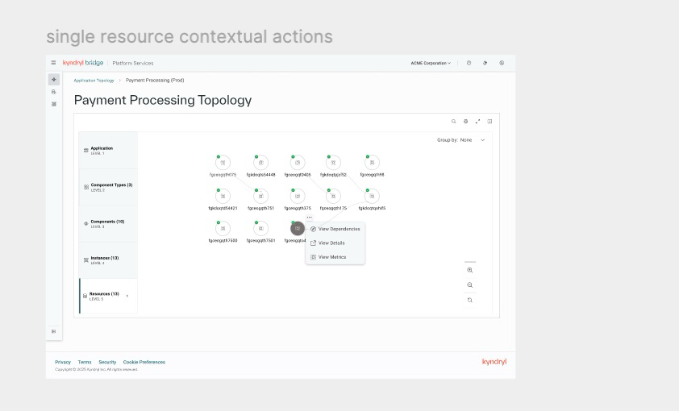
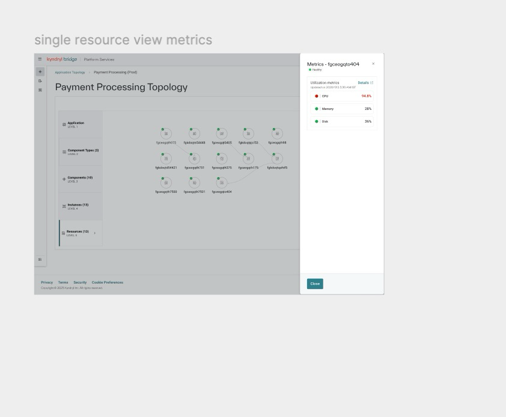
Left: “View Metrics” surfaces as a contextual action on node selection. Right: the metrics panel slides in alongside the topology — CPU, Memory, and Disk visible without leaving the canvas or losing hierarchy state.
Navigation to Infrastructure Inventory for performance metrics was eliminated for the most common investigation tasks. Users accessed component health and metrics without losing their place in the topology.
The original system treated all nodes equally — a failing component and a healthy one looked identical until you read the label. I redesigned the visual hierarchy so critical nodes received a persistent red filled icon, distinct from the green indicators on healthy components. Stakeholder pushback framed it as “alarming users unnecessarily” — but the real concern was change management, not design. Testing resolved it: operators located critical nodes 13× faster (under 3 seconds vs. 40+), and users reported the stronger signal reduced anxiety because they knew immediately what needed attention.
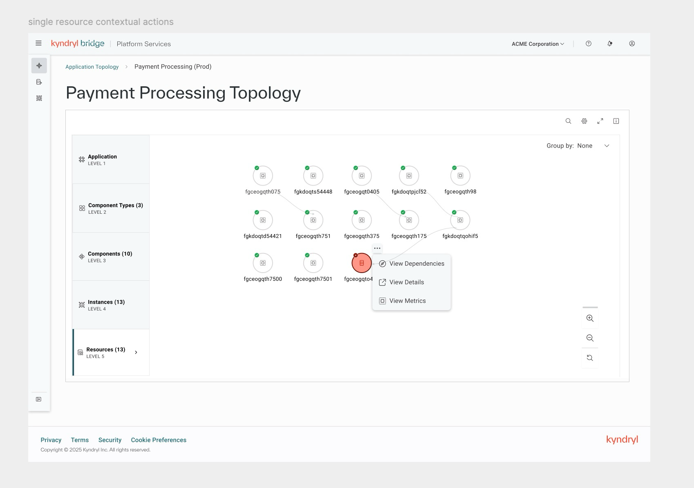
At a glance: fgceogqto4 (critical, red) stands out from 12 healthy components without any search or scanning. Visual weight does the work.
Time to locate an unhealthy component: 40+ seconds (flat hierarchy) → under 3 seconds (weighted hierarchy) in usability testing.
08Final Solution
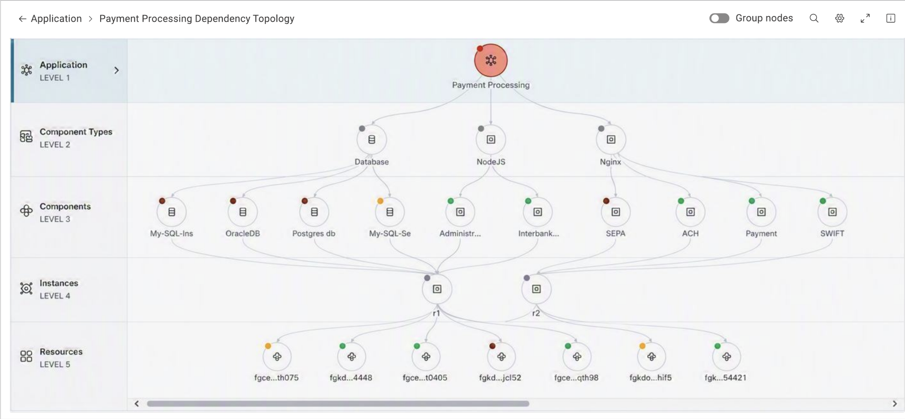
The shipped solution delivers: a progressive disclosure topology canvas that scales from a handful of assets to enterprise environments, zoom and pan navigation with snap-to-fit, expand/collapse dependency exploration, focus mode for isolating selected assets and their direct connections, in-canvas search and filter scoped to the visible topology, a slide-in context panel with entity details and open incidents, and a weighted visual hierarchy that surfaces unhealthy components without requiring search. The experience was designed collaboratively with Chief Architects, Site Reliability Engineers, and ITOps Admins — and validated across topology sizes ranging from 50 to 5,000 nodes.
End-to-end UX strategy for Infrastructure Topology across Kyndryl Bridge — from research framing to shipped experience
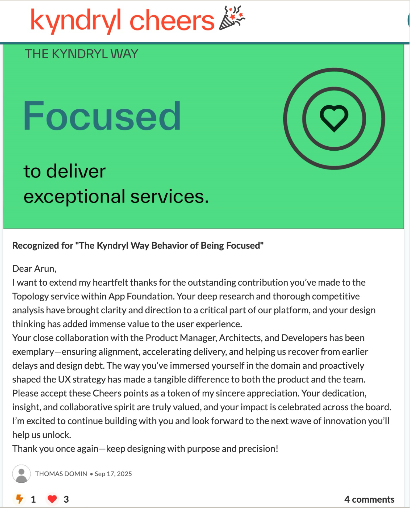
Leadership
09Learnings
Define shared vocabulary before designing shared experiences. AIOps, Application Foundation, Architects, and SREs each had a fundamentally different understanding of what “topology” meant. The first and most important design work was not wireframes — it was alignment on a shared model. Without that, every UX decision was contested at the wrong level.
One topology view cannot serve 100+ use cases. The pressure to create a single unified view that satisfied Application Views, Infrastructure Views, Service Maps, and Hierarchical Views simultaneously was the root cause of most design friction. Progressive disclosure and persona-specific entry points are not a compromise — they are the only architectural response that scales.
Design in parallel with definition, not after it. Requirements around naming conventions, grouping strategies, hierarchy levels, contextual actions, and filters were still evolving during active UX work. Waiting for complete definition would have blocked progress indefinitely. The approach was to design with explicit assumptions, flag dependencies, and iterate as decisions crystallised.
Build navigation flexibility into the model from the start. Fixed hierarchy levels were rejected in architecture review — application structures vary too significantly for a rigid 5-level tree. The navigation model had to be redesigned to be data-driven rather than structurally hardcoded. This is a lesson in designing for the data's shape, not an idealised version of it.
Validate with realistic data early — and make it a stakeholder commitment. Repeated requests for real application topologies, hybrid environments, and on-prem examples reflected a reasonable concern: a design that works for 50 placeholder nodes may not survive contact with actual enterprise complexity. Stress-testing against real data should be a gating criterion, not a late-stage validation.
Hold phase 1 requirements that solve the core problem. The context panel was nearly cut to phase 2. If it had been, the most-cited friction point in research — navigation to a separate service and losing canvas state — would have shipped unsolved. Know which features are product features and which are problem solutions. Protect the latter.
Stakeholder pushback on visual treatment is often a proxy concern. Resistance to the filled red critical icon was framed as “alarming users unnecessarily.” The underlying concern was change management and user adoption, not the design itself. Surface and address the real concern — the testing data that showed operators found critical nodes 13× faster resolved the debate more effectively than any design argument.
Data ownership uncertainty must be surfaced in the UX, not assumed away. When it is unclear which system owns the application definition, which platform owns topology relationships, and which data source is authoritative, users lose trust in what they are looking at. Provenance and freshness indicators are not nice-to-have — they are load-bearing when multiple systems contribute to the same canvas.